CTEC-3323-001 User Experience Design Process (Spring 2026)
This project was a development as part of a UX design course focused on applying structured design process from research to a final prototype. The goal was to identify a real-world coordination challenge and design a digital interface that improves how users plan and manage events within a specific context.
Youth leaders and church event organizers struggle to coordinate and communicate event details cleaerly due to reliance on informal communication methods which leads to uncertainty amongst attendees and inconsistent event turnout.
Church organizers and youth leaders who spend time and effort in planning, organizing, and promoting events just for a low attendance turnout.
Name: Marcus Alvarez
Background: Marucs is 26 years old and a youth leader at his local church. He works full time during the week and volunteers at church on the weekends. He regularly plans and coordinates events and communicates to students and parents.
Goals: Some of his goals include high attendane turnout at weekly and special events, for the youth to have confidence in showing up to events, and to build a stronger faith community within the youth and keep them engaged long-term.
Pain Points: Some of his pain points include low attendance despite planning events in advance, event details getting lost in messages and flyers, and parents and students asking the same questions.
Name: Angela Kim
Background: Angela is 42 years old and a church organizer at her church. She works full time during the week and coordinate events at church and at home on the weekends. She regularly plans and coordinates events and has 10+ years of experience at her church.
Goals: Some of her goals include consistent attendance at church events, to create events that feel welcoming, organized, and inclusive, and for church goers to feel confident attending even if they have never been before.
Pain Points: Some of her pain points include unclear attendance numbers make planning stressful, relies heavily on announcements and flyers that people don't aways read or pay attention to, and the opportunity to repeat events feels risky when turnout is unclear and inconsistent.
Based on research and findings, it became clear that the core issue was not a lack of communication, but a lack of structured and centralized communication. Organizers and leaders relied on informal communication and inefficient tools, which made it difficult to present clear and consistent event information. As a result, the design direction focused on creating a system that prioritizes clarity, organization, and accessibility of event details.
The information architecture was designed to prioritize clarity and accessibility of event details. Core features were organized into a centralized structure, including event creation, event details, and other inputs that help create an effective and organized structure. This allowed organizers to manage all aspects of an event in one place and reducing reliance on multiple tools.
The user flow was structured to guide organizers through a clear sequence: creating an event, inputting key details, and sharing information with attendees. For attendees, the flow focused on quickly accessing essential event information such as time, location, and expectations without needing to search through messages.
The early sketches of the designs focused on the primary flows such as entering in information, navigating to the next page, and focusing on a structured flow for the user.
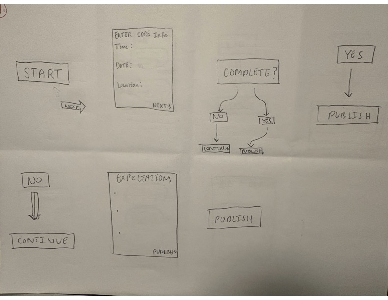
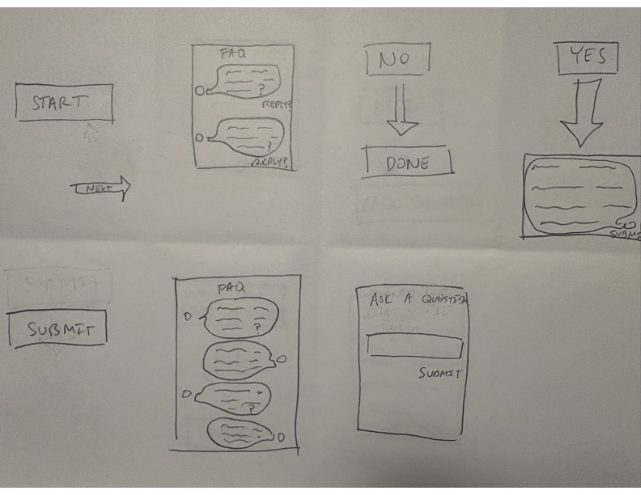
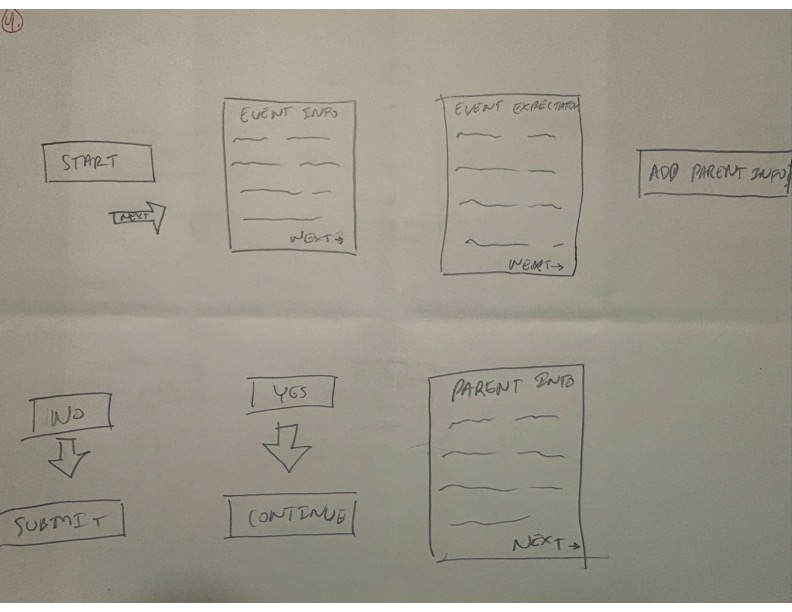
The approach I decided on focuses on creating a centralized, structured interface that simplifies how event information is organized and communicated. Based on research findings and exploration of alternative approaches, it became clear that users needed clarity and consistency more than additional features or complexity.
This approach stood out because it consolidate event details into a single, accessible system while maintaining simplicity for both organizers and attendees. Compared to more complex dashboard-based approaches, this solution prioritizes usability and reduces cognitive load, making it easier for users to quickly understand and engage with event information.
For my low-fidelity wireframes, my goal was to focus on how users would navigate through the process creating and presenting information. My sketches prioritized simplicity, providing an emphasis on organizing key steps for inputing information.
The low-fidelity wireframs worked in the sense of clarity and providing a logical flow for users. However, the wireframes were very clustered in terms of navigating and could overwhelm the user.
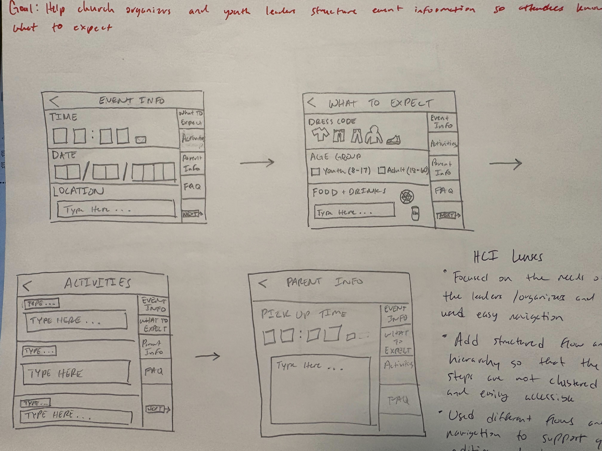
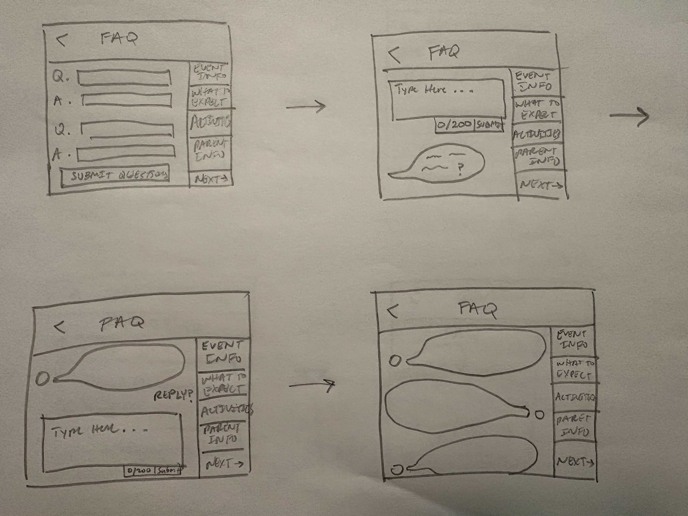
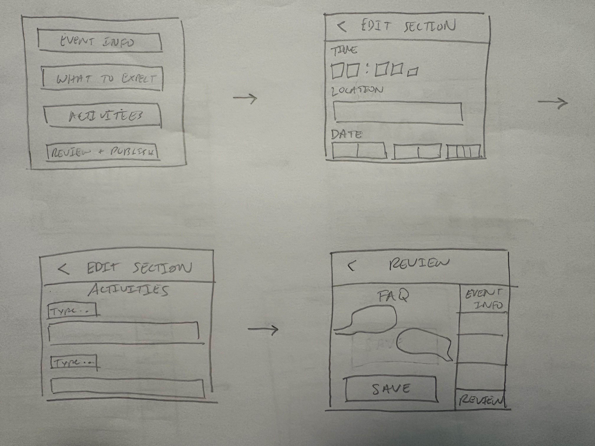
To improve clarity and usability, the structure was revised to better group related information and reduce unnecessary steps in the user flow. Key changes included reorganizing event details into clearer sections, providing simplified navigations, and improving the hierarchy of information so that the most important details were immediately visible.
These revisions were made in response to usability concerns identified during early wireframes. The goal was to reduce cognitive load and ensure that users could both create and access event information more efficiently. By restructuring the layout, the design became more flexible and better aligned with how users actually interact with event information in real-world scenarios.
The transition into high-fidelity design focused on refining the structure established in earlier wireframes while introducing visual hierarchy and clarity. My goal was to translate the core user flows and information architecture into a more polished and intuitive interface that clearly communicates event details and supports user interaction.
A clear visual hierarchy was established by emphasizing important information such as event title, time, and location, ensuring that users can quickly understand essential details. Additionally, interaction elements such as buttons and navigation components were designed to be simple and visible, supporting a smooth user flow. The use of consistent patterns across screens helped reinforce usability and create a cohesive experience.
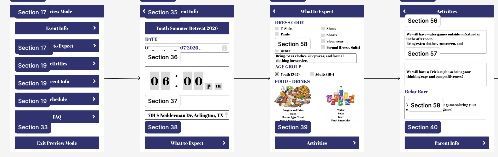
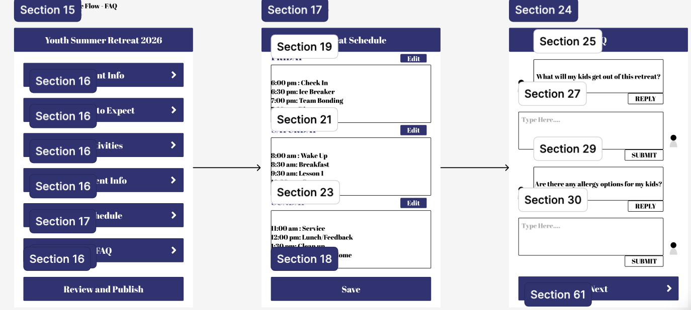
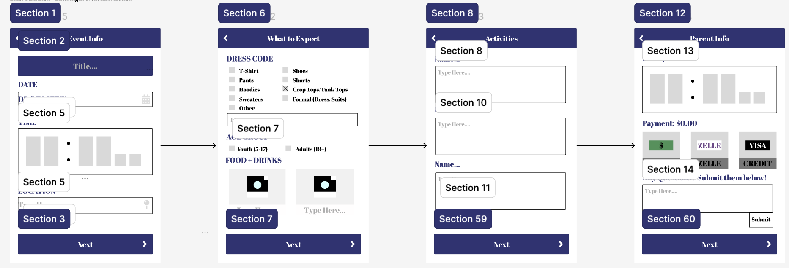
A key point in my design process occurred when the initial approach focused too heavily on a linear, step-by-step flow for event creation. While this simplified the process, it limited flexibility and made it difficult for users to review or modify event details without navigating through multiple steps.
This pivot led to several important design decisions. First, event information was reorganized into clearly defined sections, allowing users to quickly locate and understand key details without unnecessary navigation. Second, the interface was designed to balance guidance with flexibility, enabling users to move through the process while still maintaining visibility of the overall event structure.
Rather than designing each screen independently, reusable components such as buttons, input fields, and event cards were created to maintain visual and functional consistency. This approach allowed for a more efficient design process while ensuring that users experience predictable interactions throughout the interface.
The interactive prototype was developed to simulate how users navigate and interact with the system in a realistic context. It prioritizes efficiency by minimizing unnecessary steps and allowing users to quickly access or modify event details. Interaction logic was designed to be simple and predictable, ensuring that users can move through the interface without confusion.
The methods I used to evaluate my prototype include cognitive walkthrough, heuristic evaluation, first-click testing, peer review, and informal user testing with members of a local church community. Cognitive walkthrough was used to assess how easily a new user could navigate key tasks, such as navigation. Heuristic evaluation was conducted to evaluate the interface against established usability principles, focusing on clarity, consistency, and visibility of system status. First-click testing was used to determine whether users could intuitively identify the correct starting point for key actions. In addition, peer feedback and informal testing with individuals from a local church community provided real-world perspectives on usability.
One of the key issues identified during validation was the lack of clear feedback during user interactions. Both error states and successful actions were not clearly communicated, leaving users uncertain about whether their inputs were correct or if their actions had been completed.
To address this issue, error feedback was redesigned to be more visible and specific. Clear messaging and visual cues such as color and placement were used to draw attention to errors. In addition, success feedback was improved by introducing confirmation messages that clearly indicate when an action has been completed. This provided users with reassurance and confidence and helped create a more predictable and reliable interaction experience.
Before
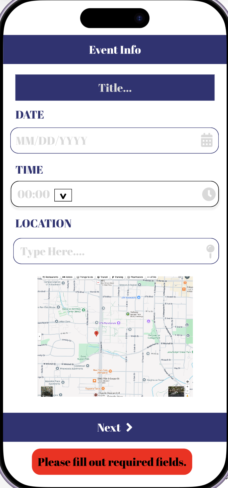
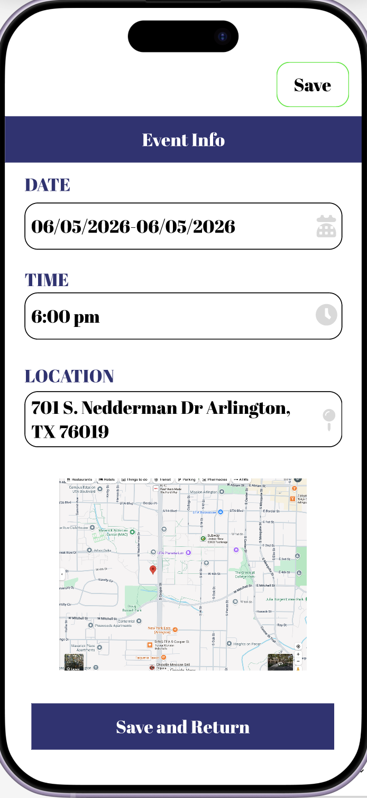
After
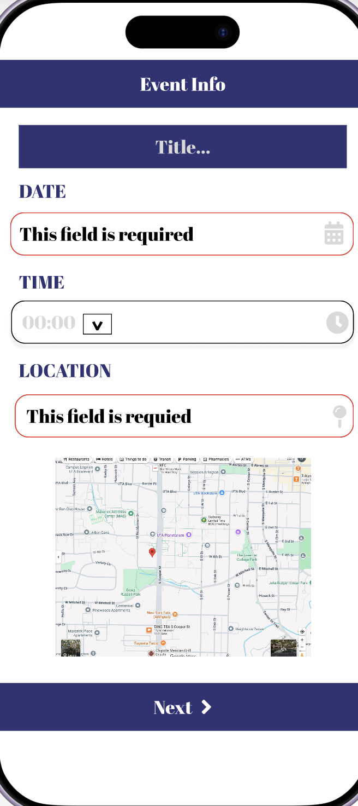
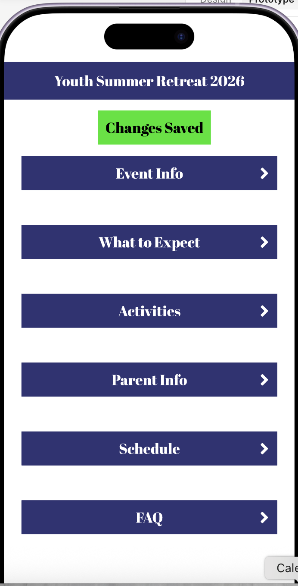
Another usability issue identified during validation was limited navigation within the interface, primarily in Flow 3 with the "Exit Preview Mode" button. Users were questioning why the button existed if there was no navigation for it.
To address this issue, a navigation structure was applied to the flow of the button to lead the user out of the "Preview Mode" and into the default layout. This allowed for more flexible movement between sections of the interface.
Before
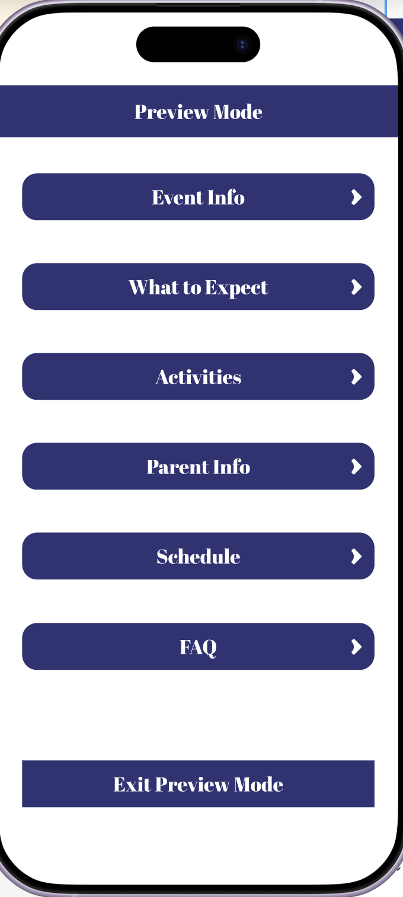
After
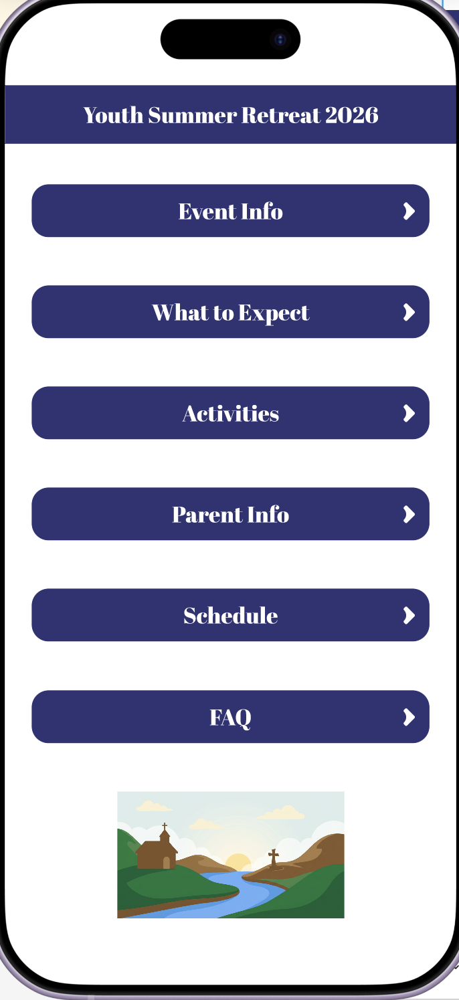
The most influential insight from research was that the core issue was not a lack of communication tools, but a lack of structure in how event information is organized and understood. This realization guided the entire design direction and emphasized the importance of designing systems that help users understand rather than simply adding more features.
A major turning point in the project occurred during the transition from early wireframes to high-fidelity design, where I had to compare simplicity to the overall structure that fit user's needs. While simpler flows improved usability, they limited user access to information, which led to a more structured approach that better supported both organizers and attendees. These trade-offs highlighted the importance of designing with real user behavior in mind rather than assuming a single ideal flow.
If I were to continue developing this project, I would focus on further refining interaction design and expanding accessibility to things such as linking payment methods. I would also explore how automation or scheduling features could further reduce the workload for organizers while maintaining clarity for attendees.
This project reflects my growth in thinking more systematically about design problems. Rather than focusing only on aesthetics and simplicity, I now prioritize structure, usability, and user needs. In addition, it reflects my ability to implement research into developing a prototype from a weak design to a much improved design.
Throughout this project, my understanding of UX design shifted from focusing on visual outcomes to prioritizing structure, clarity, and user behavior. Early in the process, I was primarily focused on how the interface would look, but through research and iterative testing, I began to understand how important information hierarchy, feedback systems, and navigation structure are in shaping the overall user experience. In addition, I was able to develop my research skills, designing skills, and critical thinking skills as the project was developing through each stage.
This section contains supporting artifacts from the full design process. These materials are provided for completeness and documentation purposes.
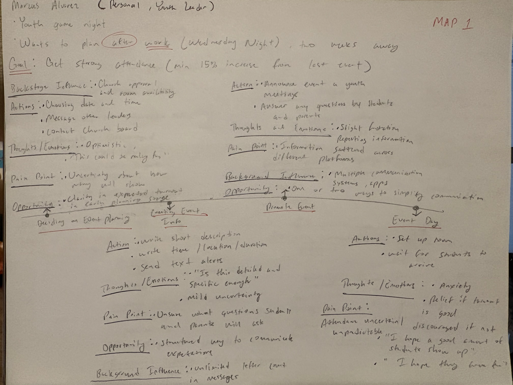
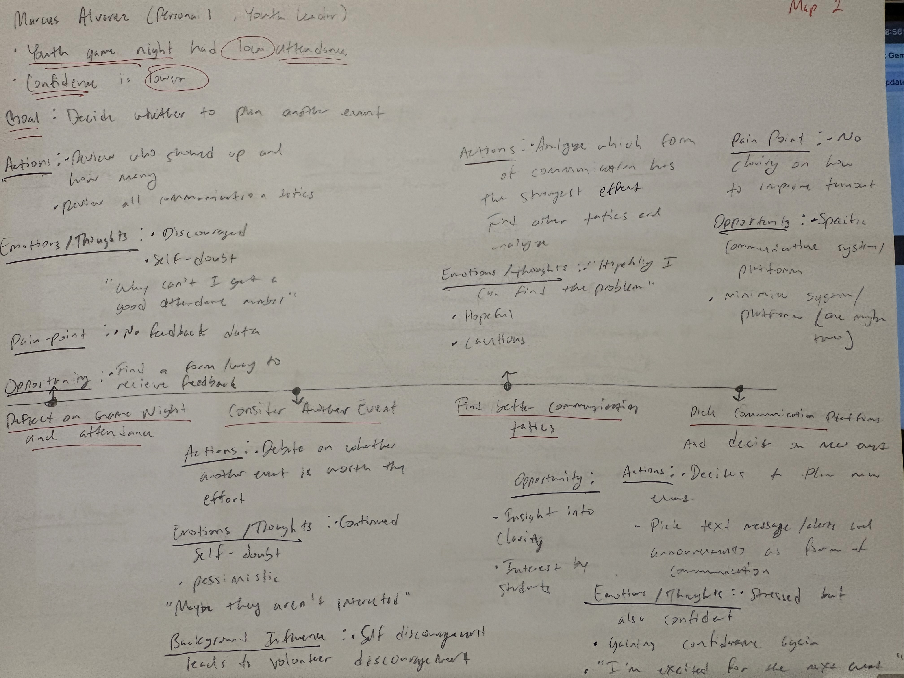
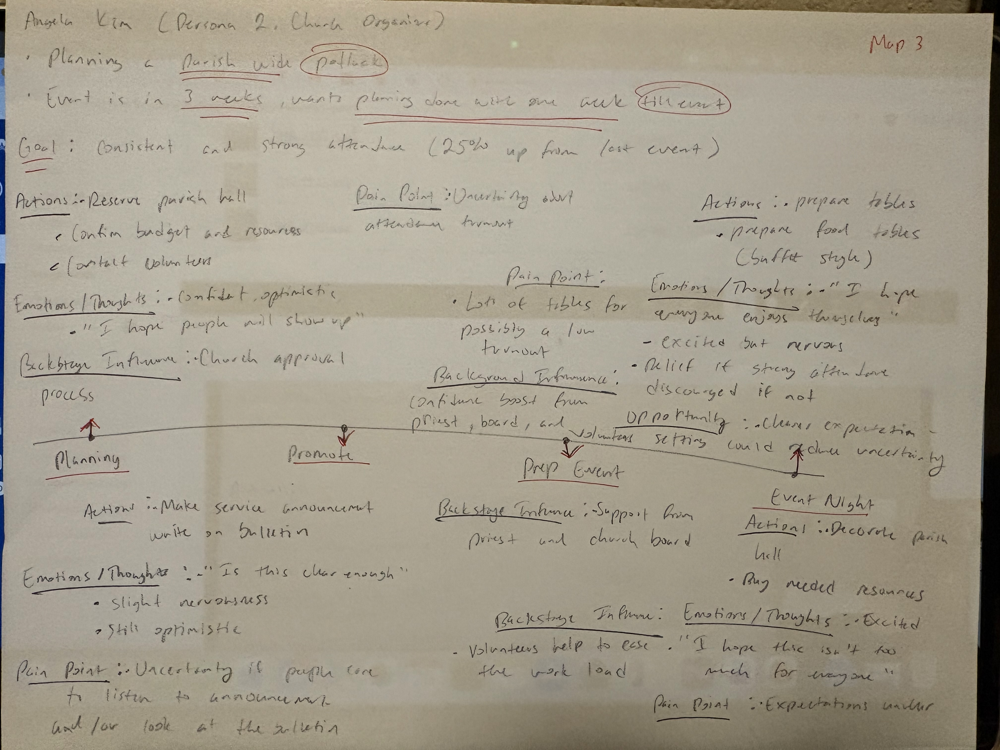
For any inquries, questions, or collaborations, please shoot me a text or send an email to schedule an in person meeting.
682-582-3518
dxp1851@mavs.uta.edu
701 S Nedderman Dr Arlington, TX 76109 United States